“СТАВИТЬ КРЕСТ НА ПОТЕНЦИИ В 21 ВЕКЕ — ЭТО ПРЕСТУПЛЕНИЕ!” МОЛОДАЯ ВРАЧ-УРОЛОГ РАССКАЗАЛА, КАКОЕ ЕДИНСТВЕННОЕ ЭФФЕКТИВНОЕ СРЕДСТВО ВОЗВРАЩАЕТ КАМЕННУЮ ЭРЕКЦИЮ И СПАСАЕТ ОТ РАКА ПРОСТАТЫ
Прочитайте статью до конца и вы узнаете:
- Чем опасна эректильная дисфункция, и какие последствия могут быть для всего организма, если не избавиться от нее вовремя?
- Как спасти себя от риска развития рака простаты, если врачи и аптечные средства не помогают?
- Можно ли избавиться от импотенции в домашних условиях?
- Какие существуют современные научные разработки для устранения эректильной дисфункции и почему их не купишь в аптеках?
В Ставропольском крае по итогам прошлого года зафиксировали снижение числа мужчин с такими диагнозами, как импотенция, простатит, аденома и рак простаты на 58%. Журналисты не сразу нашли причину этого удивительного факта.
Каково же было их удивление, когда оказалось, что большинство освободившихся от этих недугов являются пациентами вчерашней студентки медицинского университета.
Анна Евсеева работает в отделении урологии одной из больниц Ставрополя, и, хотя она все еще студентка ординатуры, очередь к ней превышает очереди к именитым коллегам со стажем в медицине 20 и более лет.
“Ко мне приходят и 70-летние дедушки, которые хотят вновь почувствовать себя мужчинами и просят вернуть им потенцию. Когда получается это сделать, я искренне радуюсь. Но меня пугает, как много на приеме 40-летних… Это же кошмар! Эти мужчины еще могут… просто должны получать удовольствие от жизни, любить своих жен, подруг, ощущать себя способными на все… а они рассказывают мне, что секс у них бывает раз в два-три месяца. Просто ужас, я бы сказала, что это национальная катастрофа!”
Мы приводим ниже отрывок из интервью с Анной Евсеевой, в котором она рассказывает о современном способе борьбы с мужскими недугами.
Корреспондент: Добрый день, Анна! К вам не пробиться! Ожидающие приема стоят даже на улице!
Анна Евсеева: Здравствуйте (смутилась). Это правда, и я сегодня приму еще не более 20 человек. Мои возможности ограничены. Приходится работать почти без выходных, чтобы очередь стала поменьше, и все равно больные идут и идут.
Корреспондент: В чем секрет вашей популярности у пациентов?
Анна Евсеева: Я не хочу себя нахваливать (снова смутилась). Просто я стараюсь относиться к работе максимально ответственно. Выслушиваю жалобы, задаю все необходимые вопросы, назначаю анализы и на основе составленной картины строю дальнейшие планы.
Возможно, дело в том, что лично я считаю мужское здоровье важнейшим пунктом в борьбе за здоровье всей нации.
Мужскую потенцию можно восстановить в любом возрасте. Махнуть на нее рукой со словами “Ну что поделать, возраст такой!” - по моему мнению, просто преступление!
Ведь если мужчина смирился с тем, что у него проблемы с потенцией, он прекращает заниматься сексом, а это ведет к застойным явлениям в малом тазу и далее начинаются еще более серьезные проблемы: в тканях предстательной железы образуются опухоли.
Об этом не так много говорят в СМИ, но от рака простаты ежегодно в мире умирает более 400 000 мужчин и каждый год эта цифра растет
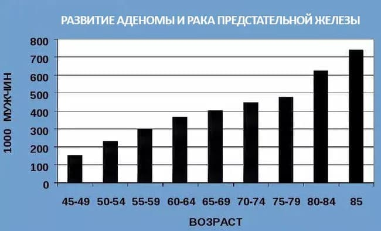
Думаю, каждый из нас знаком хотя бы с одним человеком, у кого умер родственник мужского пола именно от этой болезни.
Вот что говорит о раке простаты самый известный врач нашей страны - Александр Леонидович Мясников:
Мясников Александр Леонидович
Советский и российский врач общей практики, заслуженный врач СНГ, теле-радиоведущий и общественный деятель, автор книг о здоровье. Награжден орденом Пирогова и почетным знаком «Заслуженный врач города Москвы».
Из всех злокачественных образований у мужчин рак предстательной железы стоит на втором месте по частоте после рака легкого. Такова мировая статистика. В России рак простаты занимает первое место.
Риск рака простаты повышается с возрастом, но, как и многие другие опасные заболевания, рак в последнее время сильно “помолодел”.
Особое коварство этого вида рака в том, что он протекает в скрытой форме. С этой болезнью можно прожить много лет и даже не подозревать о ней.
Если у одного из ваших ближайших родственников (в данном случае мы говорим об отце либо родном брате) был рак простаты, риск возникновения заболевания у вас повышается в 2 раза, а если проблема была выявлена и у отца, и у брата, риск возрастает в 5 раз.
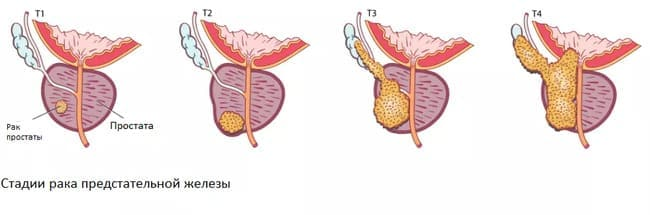
Такие факторы, как малоподвижный образ жизни, вредные привычки, частый стресс и неблагоприятная экологическая обстановка в регионе, также заметно влияют на вероятность развития рака простаты.
Симптомы, на которые следует обязательно обратить внимание:
- слабая струя мочи при мочеиспускании;
- кровь в моче;
- боль в спине и ощущение “боли в костях”;
- постоянная и беспричинная общая слабость и быстрая утомляемость;
- периодическая субфебрильная температура;
- очень слабая эрекция по утрам или ее полное отсутствие;
- постоянное повышенное или пониженное артериальное давление;
- отсутствие полового влечения.
В случае, если вы нашли у себя хотя бы один симптом, следует как можно скорее обратиться к специалисту!
Корреспондент: А как выглядит средство, которое вы рекомендуете?
Анна Евсеева: Сейчас покажу (ищет в своем шкафчике). Вот. Такая упаковка. Важно не спутать с чем-то другим, подделок достаточно много. Запатентовано именно такое название — “Хуан Хун”.

Секрет эффективности этого средства — в особой формуле, в которой собраны самые действенные природные компоненты. Они способны проникать в органы малого таза и нормализовать кровообращение.
Потенция мужчины восстанавливается.
Благодаря устранению застоя крови происходит улучшение работы всех органов в этой области. Предотвращается риск возникновения как доброкачественных, так и злокачественных новообразований в предстательной железе и половых органах мужчины.
Пациенты начинают жить полноценной жизнью, не боясь, что в их организме медленно развивается опухоль, которая в любую минуту может перейти в агрессивную стадию.
В состав "Хуан Хуна" входит большое количество натуральных компонентов (экстракты тонгкат али, левзеи, кордицепса, коры йохимбе), которые оказывают позитивное влияние на мужское здоровье. Эти природные вещества были известны с древности, но точная формула была найдена учеными лишь недавно. Все компоненты проходят тщательную обработку.
Также важным преимуществом натурального комплекса “Хуан Хун” является то, что он содержит еще много других витаминов, макро- и микроэлементов, предназначенных для улучшения работы сосудов. То есть он оказывает всестороннее оздоровляющее действие на сосудистую систему.
Самое замечательное, что “Хуан Хун” не только борется с эректильной дисфункцией, но и запускает цепную реакцию восстановления организма. Для меня как для врача очень важно знать, что здоровье пациента улучшается и, следовательно, повышается качество его жизни. Мы называем эту взаимосвязанность “эффектом бабочки”:
1. Восстанавливается мочевыделительная система
“Хуан Хун” восстанавливает нормальное мочеиспускание, улучшает уродинамику, снижает объем остаточной мочи, избавляет от недержания.
Пациенты с восторгом отмечают, что у них:
- Исчезли боли и рези при мочеиспускании.
- Они не бегают в туалет каждые 5 минут.
- Мочевой пузырь работает как часы.
- Уходят признаки гиперактивности мочевого пузыря, чувство переполненности.
- Перестали бессчетно менять нижнее белье из-за запаха и избегать контактов с людьми.
2. Оздоравливается простата
После полного курса восстанавливается работа предстательной железы. Уходит воспаление, налаживается кровоснабжение органа, поврежденные ткани восстанавливаются.
Уходит боль, жжение и другие неприятные ощущения.
3. Улучшается эрекция
“Хуан Хун” оказывает положительное влияние на эректильную функцию. Благодаря действию компонентов средства, нормализуется кровообращение в малом тазу и улучшается потенция:
- Эрекция становится регулярной и крепкой.
- Продлевается половой акт.
- Улучшается качество спермы.
- Ощущения при близости становятся сильнее.
4. Уходят отеки
При курсовом приеме “Хуан Хун” восстанавливается правильная работа почек и жидкостный обмен в организме. Почки перестают задерживать воду, и отпадает необходимость принимать мочегонные.
- Перестают болеть и отекать ноги.
- Уменьшается живот, потому что спадают отеки внутренних органов.
- Уходит жидкость из легких, становится легче дышать.
5. Исчезает геморрой и прочие проблемы с венами
Благодаря улучшению кровоснабжения и укреплению стенок вен, геморрой отступит и больше вас не побеспокоит.
6. Усиливается иммунитет
Улучшается кровоснабжение не только органов малого таза, но и костного мозга, который занимается производством иммунных клеток. Это приводит к усилению защитных сил организма.
Корреспондент: В сети мы нашли множество историй того, как ваши пациенты избавились от простатита и импотенции. Они сердечно благодарят вас за шанс на вторую, счастливую жизнь. Приятно осознавать, что вы помогли стольким людям?
Анна Евсеева: Делать людей здоровыми - призвание любого медика. Я радуюсь тому, что смогла помочь многим, но еще больше людей ждет помощи.
Те, кто не знает про “Хуан Хун”, кто мучается от хронического простатита, испытывает трудности в сексуальной сфере, кто находится в зоне риска аденомы и рака простаты. Я хочу, чтобы они тоже были здоровы!
Поэтому я очень благодарна, что вы решили взять у меня интервью.
Корреспондент: Вот одна из историй, которую, не стесняясь рассказывает мужчина – ваш благодарный пациент. Мы считаем, что это отличный показатель того, как и ваш подход, и новое средство помогает людям!
Эдуард Петренко, Геленджик.
Я искренне благодарен Анне Евсеевой, молодому доктору, к которому я попал на прием. Честно говоря, я отчаялся. Моя семейная жизнь рушилась, здоровье висело на волоске, а из-за этого страдала и работа и все остальное. Жить вообще не хотелось.
Причиной был запущенный простатит, который привел к полной импотенции и предраку. Я перестал заниматься сексом с женой, потому что не мог. Она помучилась-помучилась и нашла себе любовника. Я даже не виню ее, если честно.
Потом врачи меня огорошили новостью, что есть подозрительное новообразование. Я сначала следил, проверялся, а потом рукой махнул. Не хотелось бороться, незачем было…
А потом из-за границы приехал в гости брат и ужаснулся, в каком я состоянии. Говорит, ты чего на себе крест поставил? Ну-ка быстро иди в больницу, у вас хорошие врачи, что-нибудь посоветуют. И как раз тогда я попал к Анне. Она меня внимательно выслушала, анализы все взяла, потом на втором приеме успокоила и сказала, что все можно поправить, нужно просто выбрать верное средство. И выписала капсулы “Хуан Хун”.
После того, как я пропил курсом по 2 капсулы в день во время еды, как и написано в инструкции, мне стало лучше. Прошли мучившие меня боли, воспаление быстро сошло на нет. Потом нормализовалась проблема с мочеиспусканием (это все связано). К затем я ощутил, что и это дело заработало. Жена была в шоке, что я снова могу с ней. Она долго просила прощения и я ее простил… я сам не знаю, как бы повел себя, если бы меня лишили секса и даже надежды на него.
Сейчас у меня все хорошо, в жизни как-то все поправилось, стало позитивнее. Спасибо огромное Анне Евсеевой и производителям “Хуан Хуна”!
Анна Евсеева: Да, я помню этого пациента, и его история очень вдохновляющая! Однако, справедливости ради, скажу, что не все готовы меня услышать.
Как-то раз ко мне пришел мужчина 48 лет с характерными признаками простатита и эректильной дисфункцией в начальной стадии. Я посоветовала ему незамедлительно начать прием “Хуан Хуна”. Он ничего не ответил тогда… А спустя какое-то время я узнала от коллег, что этот мужчина не поверил в эффективность средства и не стал принимать его. В итоге несчастный мужчина оказался в больнице, где у него диагностировали рак простаты. Ситуация была настолько серьезной, что ему пришлось удалить часть органов, семенные канатики, и половой член полностью потерял свою функцию. Начни он принимать “Хуан Хун”, когда у него появилась такая возможность, этого бы не случилось!
Именно поэтому я рада, что среди избавившихся от полового бессилия с помощью курса “Хуан Хуна” много известных людей. Некоторые из них не скрывают, что имели проблемы, о которых не принято говорить. Но так они помогают узнать о капсулах другим людям. Вот несколько выдержек из их интервью:
Дмитрий Губерниев: «Меня не обошла самая неприятная мужская проблема. Но я не удивился - полгода разъезжаю по горам, снег, ветер пронизывающий. Как бы ни старался хорошо одеваться, застудил самое, так сказать, ценное. И потом очень долго боролся с простатитом. Тот перешел в хронику, но никак не поддавался. В итоге и с сексом стала напряженка, а этого я уже никак стерпеть не мог! Сменил личного врача, и новый посоветовал мне “Хуан Хун” в качестве дальнейшей профилактики. После курса все прошло, как не было»
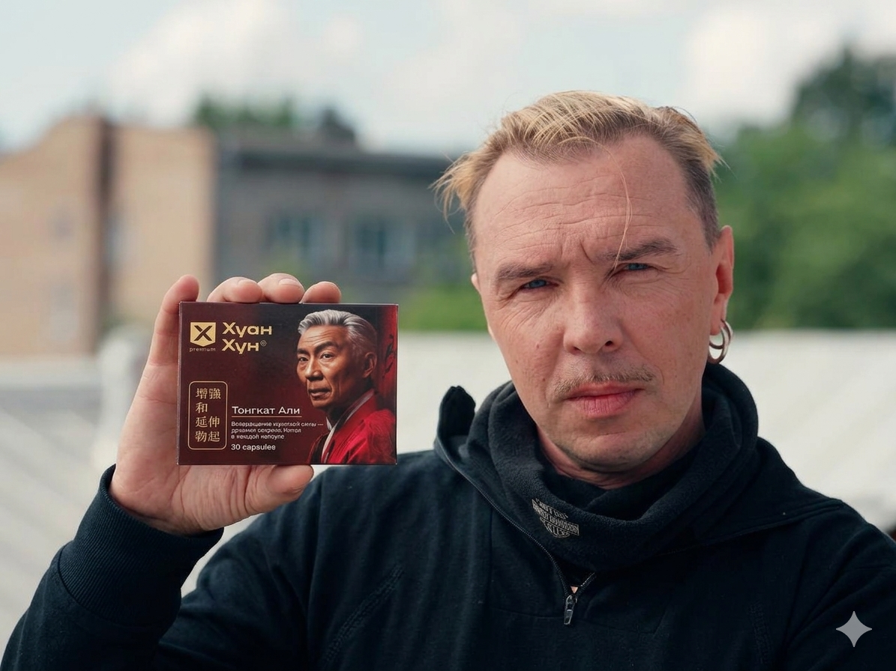
Гарик Сукачев: «Образ у меня такой, страстный, эмоциональный. И я по жизни такой. Для меня простатит и проблемы по этой части стали как удар под дых. Как будто я потерял себя. Спасибо врачам чудесным, что придумали такое средство - “Хуан Хун”! Это вернуло меня к жизни, к творческой жизни в том числе»
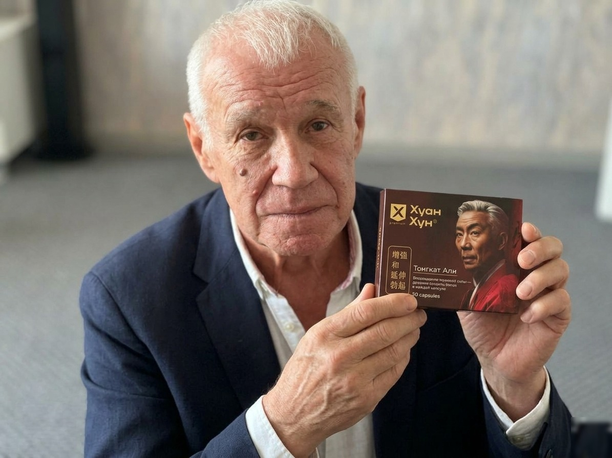
Сергей Гармаш: «Это проблема, о которой стоит говорить, не стесняясь. Это наше здоровье, мужчины! Я спокойно рассказываю, как справлялся с хроническим простатитом, сколько отдал врачам денег и сколько нервов потратил, пока не нашел единственный надежный способ вернуть себе здоровье - “Хуан Хун”. И вы, когда вам поможет, рассказывайте знакомым, кто старше 40. Это для всех полезно будет».
Корреспондент: Вы говорите о важности того, чтобы новое средство от полового бессилия было доступно как можно большему количеству людей. А как этого достичь? Насколько нам известно, “Хуан Хун” не найти в аптеках нашей страны.
Анна Евсеева: К сожалению. Производителя попросту не пустили на рынок. Эта ниша там уже давно занята другими аптечными средствами, причем 90% из них - совершенно бесполезны и даже могут навредить мужскому здоровью. Но я встречала подобную ситуацию и с другими современными отечественными разработками. Их не пускают… аптекам нужно что-то менее эффективное, чтобы боли периодически возвращались, и люди приходили вновь. Это бесчеловечно, но очень распространено.
Корреспондент: Но что можно с этим сделать?
Анна Евсеева: Рассказывать людям о том, что “Хуан Хун” следует приобретать у производителя только через официальный розыгрыш. Тем более, что в рамках розыгрыша покупателям будет предоставлена возможность получить упаковку средства со скидкой до 100% при заказе курса. Это сделано для того, чтобы у всех желающих были равные возможности.
Корреспондент: Это хорошая новость!
Анна, спасибо вам за интервью! Приятно знать, что в нашей стране есть такие талантливые и внимательные к пациентам молодые специалисты, как вы.
Анна Евсеева: Спасибо вам! Будьте здоровы!
Сообщение от редакции:
ВНИМАНИЕ: В рамках акции упаковку "Хуан Хуна" при заказе курса можно получить БЕСПЛАТНО. Для этого нужно открыть одну из дверей и выиграть свою скидку, заполнить форму заказа, размещенную ниже, до 24.03.2026 (включительно). Количество акционных товаров ограничено!
Условия участия в розыгрыше скидок на “Хуан Хун”:
1. Быть жителем России старше 18 лет.
Cредство по акции распространяется только среди совершеннолетних жителей
России.
2. Приобретать только для личного использования.
Это нужно для борьбы с перекупщиками.
3. Только через официальный розыгрыш.
В связи с ограниченным количеством продукта, средство реализуется через официальный розыгрыш - размещен ниже на
странице.
Важно: Был сделан вывод, что март и апрель - лучшее время для начала курса “Хуан Хуна”. Благодаря стабилизации атмосферного давления ускоряется обмен веществ, усиливается циркуляция крови в организме, увеличивается приток крови и кислорода во внутренние органы и эффект от приема средства возрастает. Восстановление потенции происходит на 67% быстрее, чем это происходило бы в другое время года.
Угадай, за какой дверью скидка 100%
50%
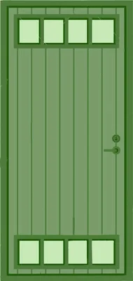
100%
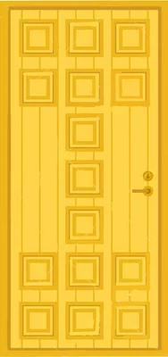
25%

Поздравляем!
Вы можете получить упаковку средства
«Хуан Хун» БЕСПЛАТНО!

Комментарии
Вениамин Старшов
Только что
Вот она, моя землячка, студентка-красавица. У меня бы все прошло от одного взгляда на нее. Хотя на самом деле, если без шуток, проблема действительно серьезная и требует внимания. Я брал "Хуан Хун", чтобы избавиться от простатита, можно так сказать. И был в итоге очень доволен после курса.
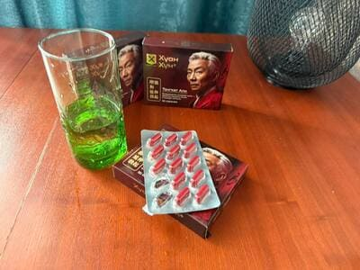
Пользователь печатает...
Олег Бортко
24.03.2026
Подтверждаю, замечательное средство. Решает мужские проблемы, о которых не хочется говорить. Делает мужчин счастливее.
Станислав Гордеев
24.03.2026
Да уж, я столько от жены наслушался, когда у меня начались эти проблемы. И что я ни на что не годен, и что по бабам бегаю, и что заразился черти чем… А мне и так тяжело было. Тайком потом стал принимать “Хуан Хун”, а когда потенция восстановилась, развелся с ней и завел себе добрую любящую девушку моложе на 15 лет. Теперь у меня вообще другая жизнь! Ребенка вот ждем.
Дмитрий Орлов
24.03.2026
Такие розыгрыши надо делать постоянными, это же важная часть здоровья нации - мужское репродуктивное здоровья! Я всем своим знакомым рассказал о том, что в случае проблем по этой части нужно обращаться сюда. Мне нечего стесняться, я прошел курс, избавился от проблемы и совершенно доволен. А те, кто сидят стесняются к специалисту пойти и даже жене рассказать - они так и будут мучиться, пока не начнется что похуже простатита и импотенции. Поверьте, бывает и хуже.
Арина Дамаскина
24.03.2026
Проблемы у мужа начались довольно давно. К врачу категорически отказывался идти, как ни уговаривала. Заказала “Хуан Хун”. После первой недели изменений не было, но я уперлась и заставила его пропить весь курс. Теперь все как прежде, жизнь наладилась!
Леонид Тимирязев
24.03.2026
Стыдно признаться, но у меня было раннее семяизвержение. Врачи никак помочь не могли. Да и ходить каждому заново это рассказывать было ужасно неприятно. Молодые так еще посмеивались тайком, думали, я не вижу. Все это унижение закончилось, когда я встретил бывшего одноклассника, мы с ним выпили-поговорили, и он рассказал, что была точно такая же беда, а избавлялся он от нее капсулами “Хуан Хун”. И все пришло в норму, теперь может держаться сколько надо. Я тоже пропил курс и у меня правда нормализовалось это дело. Могу полчаса держаться, если надо. Жена раза два успевает за это время)
Виктор Татарчук
24.03.2026
Потенция это дело такое. Семью скрепляет. Так что если у мужа проблемы - бегите, ищите средство, покупайте за любые деньги. Пары без хорошего секса в 70% случаев распадаются в течение года.
Иван Никифоров
24.03.2026
Надо попробовать, хорошие отзывы. Уже год мучаюсь, пока не нашел способ справиться с половым бессилием…
Ольга Белова
24.03.2026
Своему мужу тоже получила капсулы “Хуан Хун”. Пил под моим присмотром, регулярно, главное выдержать курс. Вот уже неделю засыпаем довольные, я так рада, девочки!
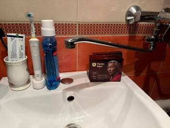
Ян Гурамов
24.03.2026
Для меня это доказательство того, что врачи наши не собираются устранять импотенцию по-настоящему. Все на откатах сидят, деньги гребут. В аптеках продаются плацебо. Лишь бы мужики деньги несли и дальше. А девушке этой, студентке, никто не рассказал об этом, вот она и взялась со всей душой за дело, возвращает здоровье мужикам.
Светлана Удмуртова
24.03.2026
У моего уже в 42 не стоит совсем. Ругаемся из-за этого. Я ему покупала какие-то разрекламированные таблетки, которые ничерта не помогали. К врачу он ходить отказывался. Говорит, ничего не болит и ладно. Стояка уже давно нет. Кошмар, я не знаю, что делать…
Полина Шамшина
24.03.2026
Светлана, ну вы статью-то читали? Вам как раз и рассказывают про средство для таких “ничего не хочу, к врачу не пойду”. Просто дайте ему эти капсулы и посмотрите, что будет. Уверяю, после курса он с вас слезать не будет. Всю камасутру перепробуете) Удачи!
Дмитрий Орехов
24.03.2026
Да уж, как много сейчас бессильных мужчин в 40-50. Раньше такого не было. Наши деды бабушкам и в 60 детей заделывали. Здоровье было крепче у мужчин и у женщин. А сейчас…
Филипп Комаровский
24.03.2026
С этим “Хуан Хун” стояк такой, что хоть любовницу заводи. Моя не справляется уже с моей страстью)))
Анна Фурсенко
24.03.2026
Напоминаю всем, что читает, что аптечные средства вроде виагры опасны для мужского здоровья. Нужно проблему решать, а не просто заставлять организм делать что-то из последних сил. У тех, кто сосудами мучается, может и инфаркт случиться. Что касается “Хуан Хуна”, это совсем другое дело. Натуральное средство, которое кровоснабжение только улучшает, причем во всем
Михаил Погребинский
23.03.2026
Ого, здесь раза в 3 дешевле, чем на том сайте, где я в первый раз покупал! И скидка при заказе курса еще к тому же!
Николай Швец
23.03.2026
Тяжело говорить о таком, но у меня уже в мои 35 проблемы начались. Правда, я работал на вредном производстве, может быть, оттуда все. Когда понял, что эрекция все хуже, сразу пошел к врачу (не понимаю тут некоторых, кого жены силком тащат) и он мне прописал “Хуан Хун”, но сказал, в аптеках не ищи. И правда нет там этих капсул. Я получил вот здесь, в официальном розыгрыше поучаствовал. Принимать начал сразу. Пока еще не идеально, но уже лучше. Стояк чаще, эрекция дольше и как-то тверже. Жена радуется! А если у женщины глаза горят, значит мы все правильно делаем))
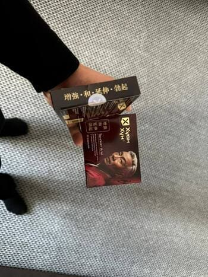
Алена Ачакова
23.03.2026
Бедные мужчины, так быстро начинает слабеть половая функция. У женщин своих проблем хватает, но хотя бы такого нет… Если мой муж начнет жаловаться, я знаю, что ему купить.
Геннадий Жаворонков
23.03.2026
Долго пытался решить эту проблему. По врачам ходил, они ничего не находили и только руками разводили. Говорили, это уже не физиологическое, а психологическое. Но когда я пропил курс “Хуан Хун”, у меня все нормализовалось. Так что делайте выводы… Врачи сами не знают, что говорят.
Тимур Проскуряков
23.03.2026
Не помогают врачи мужикам в таких проблемах! Еще хуже от разрекламированных аптечных средств! Слава Богу, есть натуральные нормальные средства, которые вправду помогают. И спасибо тем, кто их производит.
Виктор Прилепин
23.03.2026
Я тоже считаю, что на мужское здоровье почти всем плевать. Спасибо этой студенточке милой. Умница, гордость страны. Сколько счастливых семейных пар благодаря ей в Ставрополье!
Андрей Воронков
23.03.2026
Чуть не досиделся так до рака простаты! Все признаки уже были. Если бы свекр не подсказал купить “Хуан Хун”, я не знаю что бы было. И моя вообще не волновалась, ну не стоит и хрен со мной. Такая любовь была, а теперь… Может, разводиться?
Николай Гаев
23.03.2026
Андрей, Ну смотри, мужик. Ты-то про все ее проблемы со здоровьем знаешь? То-то и оно! Сам справляйся, большой уже.
Павел Ханенко
23.03.2026
Замечательное средство, я попробовал и избавился от застарелого простатита.
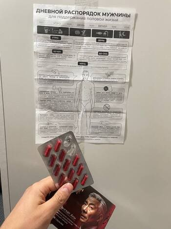
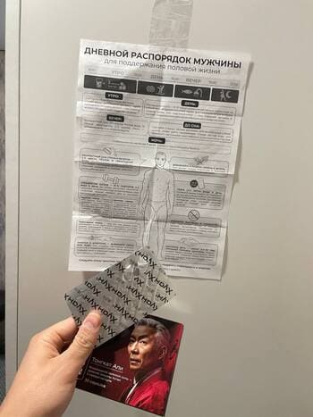
Ирина Егерева
23.03.2026
Мы сначала пробовали сами справляться с помощью народных средств, но особого результата муж не заметил. Только время потеряли. Муж решил обратиться к врачу и правильно сделал. Специалист попался хороший, порекомендовал “Хуан Хун”, вот он помог. Реально эффективное средство и по цене не шибко дорого стоит.
Татьяна Петрова
23.03.2026
Ох мы с мужем намучились! Сначала уколы ему делали, он по врачам ходил. Потом вроде бы привели в норму, но начала эрекция ослабевать. А от таблеток против простатита начались проблемы с ЖКТ. Так что “Хуан Хун” стал нам спасением. С этим средством и простатит прошел, и потенция стала у мужа как раньше. Все хорошо теперь.
Роман Романенко
22.03.2026
Только сегодня получил посылку. Буду принимать по инструкции и напишу, как что.
Алексей Мирный
22.03.2026
Мне тоже уже надоели проблемы и с эрекцией, и с позывами в туалет. Сил нет, чувствую себя стариком, хотя мне 45 всего. Надо и мне заказать “Хуан Хун”, может, со скидкой повезет.
Кирилл Спирин
22.03.2026
Мне не то, чтобы сильно помогло, но получше стало. Иногда утром ощущаю стояк, а тянущие боли в районе паха ушли. Надо, видимо, до конца принимать.
Олег Донцов
22.03.2026
По приколу получил в подарок деду своему, так у них с бабушкой новый медовый месяц начался. А ему 76! Не знаю, смеяться или как)
Алла Пономаренко
22.03.2026
Муж испытывал проблемы с длительностью акта - только вроде начал, хоп и все закончилось, а я не успела даже ничего понять… После начала приема “Хуан Хуна” не сразу, но к концу курса ситуация стала прямо противоположной - по времени секс стал длиться столько сколько надо, наконец начала хоть успевать удовольствие получать прежде чем все заканчивается. Так что да, я тоже рекомендую это средство. Тем более оно натуральное.
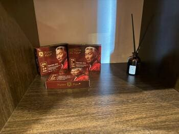
Евгений Богомаз
22.03.2026
Ходи не ходи к врачам, прописывают одно и то же. Я на форумах видел списки рекомендованных средств. Там просто пустышки или аптечные средства по типу виагры, от которых могут быть проблемы. Нормального ничего не советуют. А “Хуан Хун”, наша передовая разработка, остается в тени из-за лобби фармкомпаний. Не знаю, что и сказать.
Павел Храмов
21.03.2026
Спасибо за скидку! Очень хорошее средство! Помогло уменьшить мою аденому.
Валентина Цапу
21.03.2026
Больная тема. Понятное дело, что у многих мужиков такая проблема сейчас. Я мужа заставила идти к урологу, он прописал ему разные таблетки, уколы, но ничего не помогло. Потом в частной больнице ему порекомендовали “Хуан Хун” курсом пропить. Курс подходит к концу, и уже очень заметны улучшения!
Оксана Мельникова
21.03.2026
Эти капсулы нам вернули вторую молодость! Я не чаяла уже, что могу в постели буквально улетать, как раньше. А вот так теперь у нас, муж стал такой страстный после курса Хуан Хуна.
Глеб Смирнов
21.03.2026
Рад за всех, кто смог перебороть импотенцию. Очень хочу справиться с ней тоже. Начинаю курс “Хуан Хуна”. Посмотрим.
Екатерина Дурова
21.03.2026
Пока только ждем посылку, я так надеюсь на помощь! Без хорошего секса жизнь совсем не та.
Инна Царева
20.03.2026
Мы пробовали все что только можно, помогло восстановить потенцию только это средство. Два года два назад мы думали, что у нас ребеночка не будет! А сейчас мужа привели в норму и я беременна) Поэтому могу точно сказать, что капсулы “Хуан Хун” действительно хорошие.
Александр Травников
20.03.2026
Ух какой стояк после курса у меня! Я бы фотку прислал, но это будет слишком, я думаю)))
Илья Батурин
20.03.2026
На одного счастливого мужчину больше. Я тоже избавился наконец от своей импотенции. Думал, буду так мучиться до старости, а оказалось, что это не так уж сложно, если выбрать правильное средство. Спасибо!